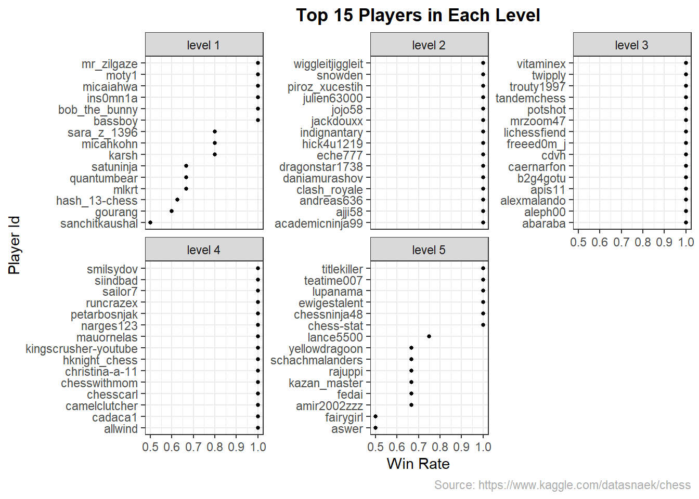
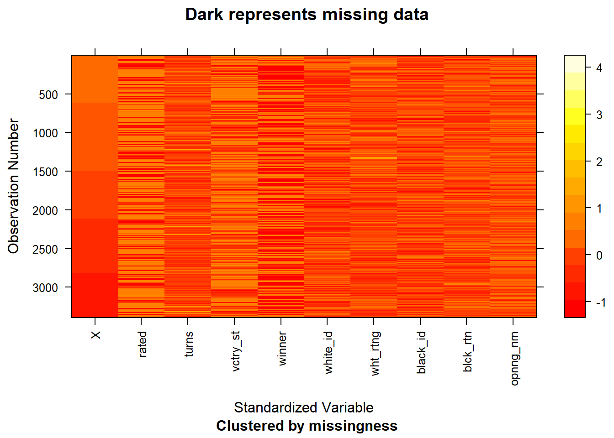

Chapter 5 Results
5.1 Ranking Players

Players were grouped into 5 different levels based on their rating scores. Level 1: 750 ~ 1149 Level 2: 1150 ~ 1549 Level 3: 1550 ~ 1949 Level 4: 1950 ~ 2349 Level 5: 2350 ~ 2750
Most of the players’ ratings were between 1150 and 1950. Level 3 (1550 ~ 1949) has the largest number of players (482) while level 5 (2350 ~ 2750) has the smallest number of players (19). The distribution of players was slightly skewed to the left and the median number of players was in level 3.
5.1.1 Winning Rate in Each Level

Among 5 levels, players placed in level 1 had the average lowest win rates compared to other players. As ratings went up, the average win rate within each level went up as well. At level 1, the average win rate was around 23% while at level 5, where most players had strong chess skills, had average win rate around 65%. Few players has win rates of 100% and 0 % and that is because they play only one game which was won or loss and did not play any longer.
5.1.2 Top Players in Each Level

Graphs above displayed top 15 players in each level. All players played at least three games to different players and achieved high winning rates. For players placed in level 2 to level 4 (1150 ~ 2349), all top 15 players had achieved surprisingly high win rate of 100%. That may implied that these players were underestimated and should be placed in the higher level.
5.2 Winning Rate of Each Opening
 Players in Black or White had different choice of openings. Among various opening and defense strategies, Hungarian Opening had the highest winning probability (approximately 73%) against White.
Moreover, Zukertort Opening had the highet winning probability (approximately 68%) against Black.
Besides, Indian game and Van’t Kruijs Opening were great against White (win rate around 70%) and Philidor Defense and Italian Game performed well against Black (win rate around 60%).
Players in Black or White had different choice of openings. Among various opening and defense strategies, Hungarian Opening had the highest winning probability (approximately 73%) against White.
Moreover, Zukertort Opening had the highet winning probability (approximately 68%) against Black.
Besides, Indian game and Van’t Kruijs Opening were great against White (win rate around 70%) and Philidor Defense and Italian Game performed well against Black (win rate around 60%).
5.3 Exploring Sicilian Defense
## # A tibble: 10 x 2
## opening_name counts
## <chr> <int>
## 1 Sicilian Defense 452
## 2 Queen's Pawn Game 221
## 3 French Defense 198
## 4 Ruy Lopez 173
## 5 King's Pawn Game 170
## 6 Italian Game 154
## 7 English Opening 138
## 8 Philidor Defense 115
## 9 Caro-Kann Defense 104
## 10 Scandinavian Defense 97During the 20000+ games data we analyzed, the Sicilian Defense was the most used strategy. The Sicilian Defence begins with the following moves: 1. e4 c5 and it is the most popular and best-scoring response to White’s first move 1.e4. Its popularity may attritubed to its combative nature which meant that Black was playing not just for equality in many lines, but for the advantage.
Its popularity and effectiveness will be discussed in the following paragraphs.


Above two graphs displayed players’ winning probabilities who implemented Sicilian Defense in each level. Apparently, players in level 4 used Sicilian Defense had the highest average win rate (75%) while level 1 players had the lowest win rate (0%). For level 3 players, the effectiveness of the Sicilian Defense varied greatly. Its average win rate was approximately 50% which was average compared to win rates in other levels, but it had the largest variance as well. Some players played the Sicilian Defense and achieved win rates around 78% and some players used the same strategy but never won.
Besides, the scatterplot indicated that both Black or White high rating players had experience against the Sicilian Defense. When against higher rating players, lower rating players normally lost even though they played the Sicilian Defense.